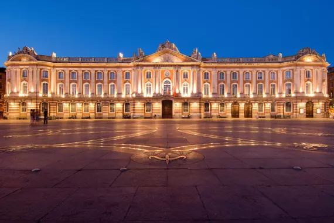
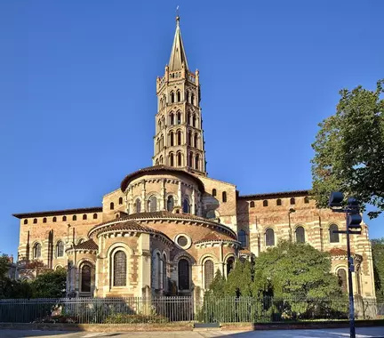
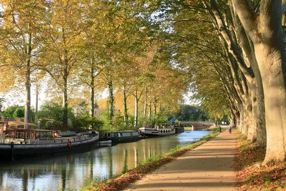

Galerie de Toulouse

Place du Capitole
La Place du Capitole est un endroit emblématique de Toulouse.

Basilique Saint-Sernin
La Basilique Saint-Sernin est un chef-d'œuvre de l'architecture romane.

Canal du Midi
Le Canal du Midi traverse Toulouse et est classé au patrimoine mondial de l'UNESCO.